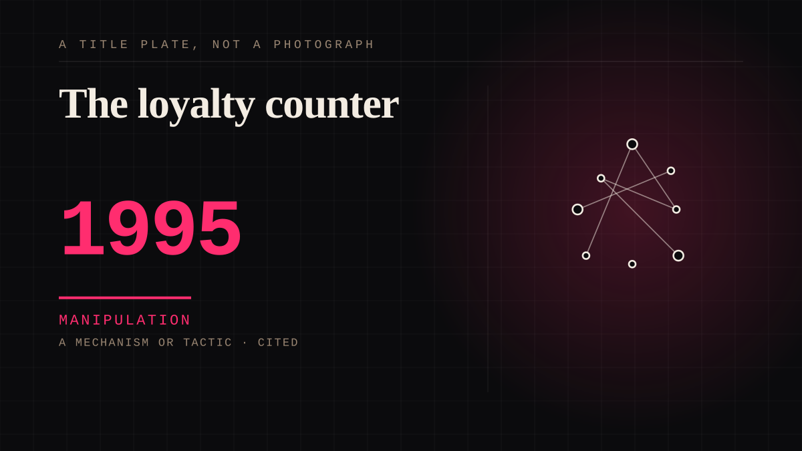

A mechanism or tactic · 1995 · Retail
The loyalty counter
Points, tiers, an anniversary date, a number that has been going up for years, and the quiet threat of what happens to it if you leave. The most ordinary parasocial object ever invented.

It converts a relationship into an account, and an account is something with a balance. Nobody feels moved by a balance. The remarkable thing is how much feeling the machinery of a balance can carry once you have also attached to a person - the anniversary counter is not a relationship, it is a receipt for one.
Manipulation. One-sided attachment engineered for somebody else's benefit. Paid intimacy, parasocial persuasion, sasaeng, grief extraction, the streak. The lane that pays the bills and the lane that causes the most harm, frequently at the same time.
Application. One-sided attachment put to work on purpose. Creator economies, community, fandom as infrastructure, and the things that genuinely help people. Not automatically good - a tool with an obvious use is a tool that will also get a bad one.
Where it sits
1950 1950-1999 · 1995 1999
Provenance · 2 source record(s)
- unverifiedWhat the card buys the retailer: a per-household purchase history, which is what makes a 'personalised recommendation' possible and what turns a discount into surveillance with a discount attachedHiggs, R., & McInstash, S. (2008). Measuring the operational efficiency of retail promotions which have a loyalty card scheme.
- unverifiedAnd the retention design, which is the reason leaving is hard: the same paper measures effects at household level, so the relationship being managed is the household's basket, not the shopper's satisfactionHiggs & McInstash (2008).
Connected · 2 out, 1 in
Reported as a story
It sits in
The full timeline → · The database → · See it in the atlas →